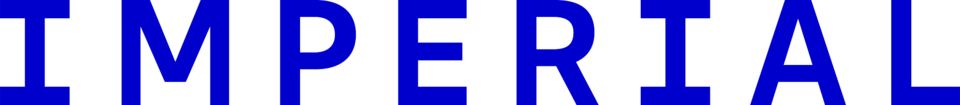
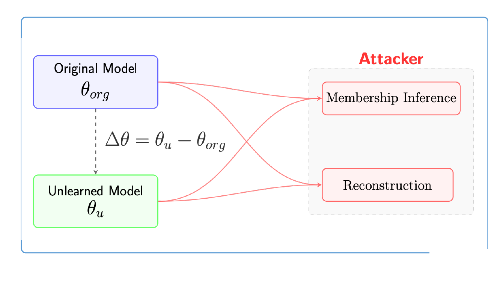
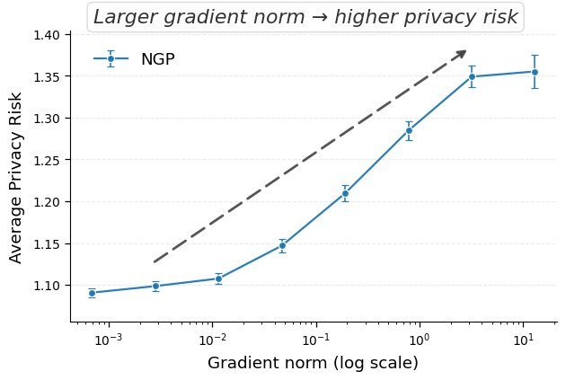
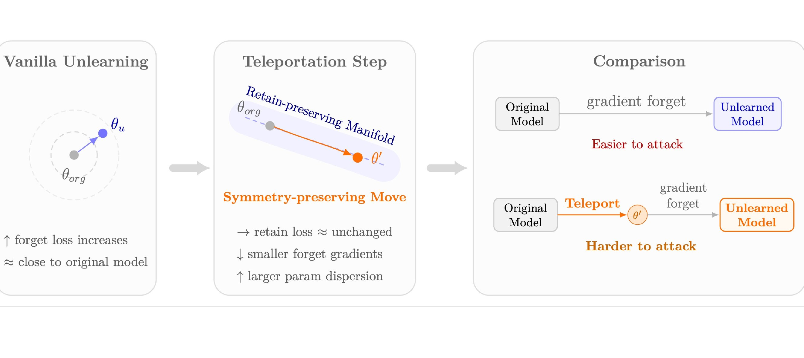
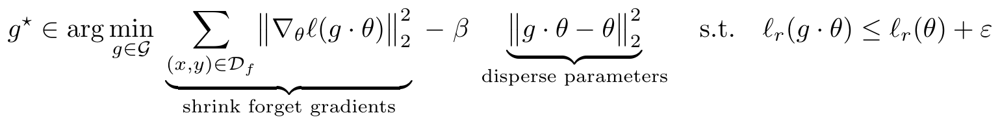
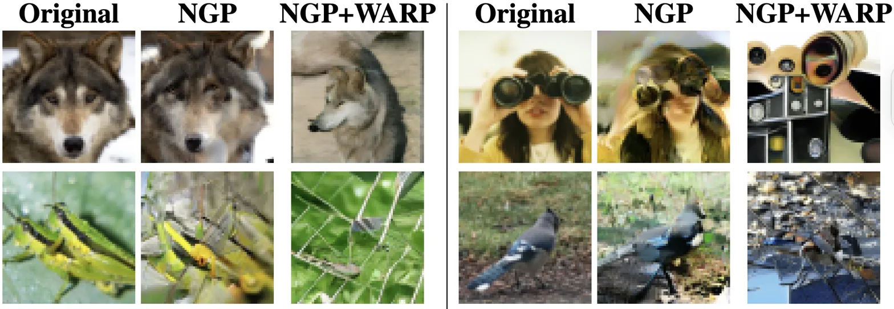

A plug-and-play symmetry defense that reshapes the geometry of approximate unlearning — reducing privacy leakage without retraining, added noise, or changing the unlearning algorithm.

Approximate machine unlearning leaks: the difference Δθ = θu − θorg encodes a forget-set gradient that attackers can invert. WARP interleaves a loss-invariant teleportation step with unlearning — walking along a symmetry orbit of the network to shrink forget-set gradients and disperse parameters, all while keeping predictions on the retain set intact. Result: up to −64% black-box and −92% white-box adversary advantage across six unlearning methods, with utility preserved.
Unlearning is efficient — but privacy is not automatic.
An adversary who holds both the original model θorg and the unlearned model θu observes their difference, which to first order is a weighted forget-set gradient. That single quantity is enough to mount strong membership inference and even data reconstruction attacks.

Samples with high gradient magnitude leave a strong, detectable signature in Δθ — proportional to how much the unlearning step had to move.
Retain-loss regularisation keeps θu close to θorg. The forget signal stays readable above the noise.
The two knobs WARP turns.

Move along the loss-invariant manifold. Forget the path, keep the function.
Symmetry. A transformation g of parameters θ such that the input-to-output map is preserved: L(g·θ) = L(θ). Teleportation. Updating θ ↦ g·θ along this manifold — the network computes the same function, but its parameters change, and so does the geometry of Δθ.

WARP objective. After each unlearning step, pick a teleport g⋆ that shrinks forget-gradient energy, disperses parameters from the original, and preserves retain utility:

We instantiate 𝒢 via a retain null-space projection: using the top-k left singular vectors of retain activations Rℓ = UℓΣℓVℓ⊤, we form the projector Πℓ⊥ = I − BℓBℓ⊤ and take each teleport step along the retain-orthogonal direction. Predictions on 𝒟r drift only within numerical tolerance.
Six unlearning algorithms · three datasets · two architectures.
WARP consistently reduces membership leakage under both attack models, most dramatically at stringent low-FPR operating points.
| Black-box U-LiRA | White-box Gradient Diff | Utility | |||
|---|---|---|---|---|---|
| Method | AUC | TPR @ 1% FPR | AUC | TPR @ 1% FPR | Test Acc. |
| NGP | 0.545 | 0.030 | 0.642 | 0.034 | 0.808 |
| + WARP | 0.516 | 0.014 | 0.614 | 0.021 | 0.797 |
| SCRUB | 0.543 | 0.047 | 0.700 | 0.102 | 0.815 |
| + WARP | 0.526 | 0.036 | 0.657 | 0.061 | 0.813 |
| PGU | 0.636 | 0.040 | 0.659 | 0.064 | 0.804 |
| + WARP | 0.631 | 0.036 | 0.533 | 0.025 | 0.808 |
| SalUn | 0.572 | 0.062 | 0.721 | 0.069 | 0.802 |
| + WARP | 0.565 | 0.059 | 0.705 | 0.062 | 0.803 |
| SRF-ON | 0.509 | 0.015 | 0.670 | 0.043 | 0.814 |
| + WARP | 0.506 | 0.012 | 0.629 | 0.030 | 0.811 |
| BadT. | 0.725 | 0.177 | 0.938 | 0.346 | 0.816 |
| + WARP | 0.661 | 0.137 | 0.907 | 0.279 | 0.818 |
CIFAR-10 / ResNet-18 · 64 shadow models × 10 forget sets. Full TPR@{0.1, 5}% and ViT-B/16 on Tiny-ImageNet results are in the paper.
Even a strong generative-prior attack fails to recover forgotten images.
Teleportation injects a component into Δθ that is nearly orthogonal to the true forget gradient gf, so the inverter collapses onto generic class priors: recoveries become label-consistent but semantically wrong.

| Method | PSNR ↑ | LPIPS ↓ | SSIM ↑ | Test MSE ↓ | Feat MSE ↓ |
|---|---|---|---|---|---|
| NGP | 10.74 | 0.56 | 0.12 | 0.10 | 5.39 |
| + WARP | 7.38 | 0.68 | 0.08 | 0.21 | 11.28 |
Unlearning methods that look safe under U-LiRA can still leak substantially under a white-box gradient-difference test.
WARP reshapes Δθ along a loss-invariant manifold. No training-time statistics, no added DP noise, and no change to the unlearning algorithm.
WARP outperforms projected DP-Langevin unlearning at comparable retain accuracy, with an information-theoretic backing in Appendix O.
@inproceedings{maheri2026warp,
title = {{WARP}: Weight Teleportation for Attack-Resilient Unlearning Protocols},
author = {Maheri, Mohammad M. and Cadet, Xavier and Chin, Peter and Haddadi, Hamed},
booktitle = {The Fourteenth International Conference on Learning Representations},
year = {2026}
}